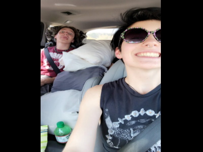
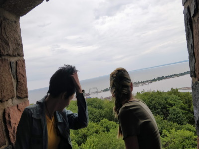

It may not be something exclusive to the road trip, but the entire trip I was memorized by one person.
I think it goes without saying but I find them irresistibly beautiful. No matter where we were, or what
we were doing, I couldn't help but be enthralled by them.

There were days on the trip that I hated how close we were, and yet I couldn't say how I felt. It was
a mental battle with insanity every hour trying to keep my feelings hidden. Every hug was a nudge closer
to the cliff, of letting go and saying everything on my mind. All of us in one tent, sleeping next
to them, I had never tested my willpower so much. Yet still I would fail and give into the emotions I had
hidden for months.

Every day we would be next to each other, and yet it was all under the guise of just being friends.
When it was just us, and I wasn't overthinking every action, it was probably the closest I've come
to pure bliss. Not thinking of anything else, but just being happy in the moment. Reality would come
back and then once again I would be back to hiding how I felt.

Finally on the last day everything came out, at first I was a nervous wreck. Not knowing what to do
and trying my best to not let everything out all at once. Knowing how they felt and that I was hiding
what I felt for so long no longer had to be kept secret, was a relief like nothing else. It may have
been the end of the trip, but it would be the start to the happiest I've been in as long as I could
remember.
No Longer Hidden, I was Free